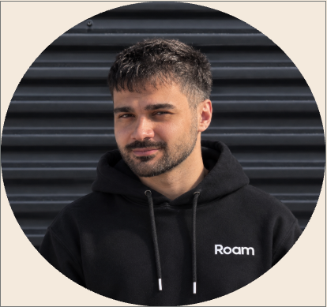

A broad knowledge base built from thousands of raw data points. The AI structures it. The PM decides what the next BMW must deliver.

Next: prioritization per market, where linked requirements are bundled and conflicts are decided together.